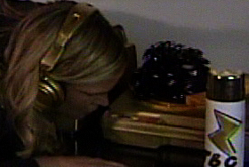
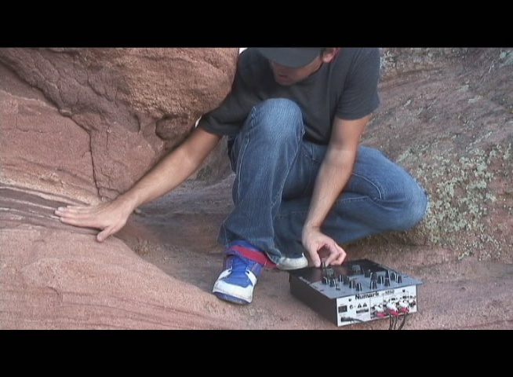

people doing strange things with electricity
The 24072nd dorkbot-nyc meeting took place on Wednesday, December 6th, 2006, at 7pm at Location One in SoHo.
It featured the fragrant and marvellous:
Sam Freeman: 1000 Ways It Doesn't Work
1000 Ways It Doesn't Work is a multimedia art project which attempts to come to terms with the General Electric Corporation. Through installations, performances, videos, programs, correspondence, and web pages the project seeks the human dimensions and implications of the multi-national behemoth that is GE. The presentation will include an overview of all the pieces involved, and a discussion of where the project can go from here.
http://1000ways.org
Marisa Olson: Oh.Yeah.I.Love.You.Baby
Marisa's work deals with popular music and the cultural history of technology. She's just started production on her first sound art album, "Oh.Yeah.I.Love.You.Baby," in which each word in the album title is also the title of a respective track whose lyrics consist solely of that word. To her, these words are the "greatest hits" of pop lyrics, and each utterance of them is culled from hours and days of pop music samples. Of course, Marisa's work is also often about failure, humiliation, and a lack of talent. Accordingly, she's not sure whether her project sucks or not. She could use a little feedback on this work in progress.
http://www.marisaolson.com
Rick Silva: RSS Jockey
silva will do a short presentation of his work in the last 8 years that has used the d.j. and d.j.ing as a metaphor. including a screening of silva's 1999 short film 'scratch', brief overviews of recent projects rssjockey.com and satellitejockey.net and a sneak preview of his upcoming project 'natural selection.'
http://rssjockey.com
Some images from the meeting.
More images from Joel.